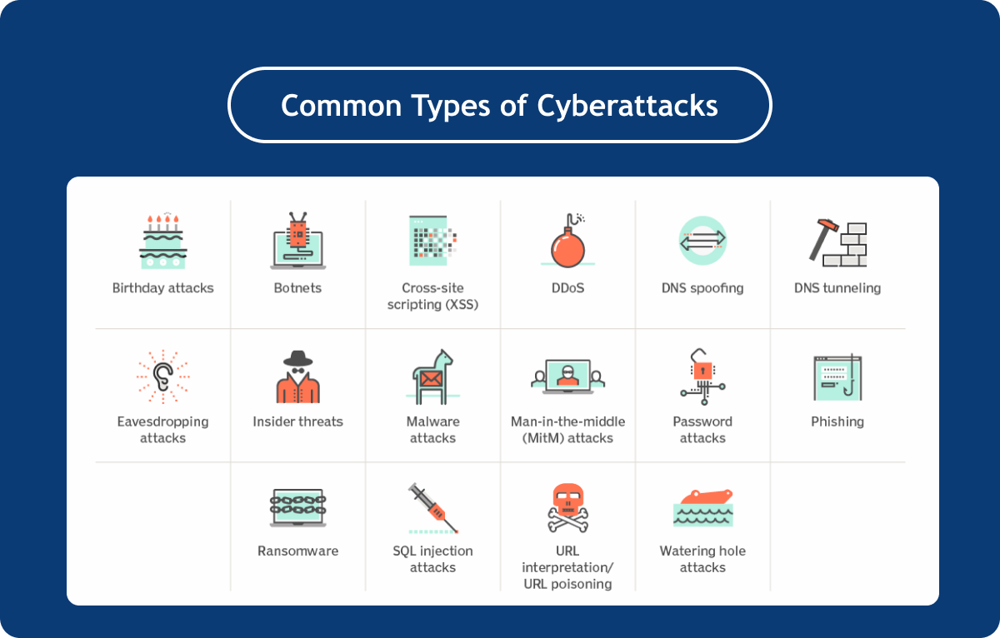
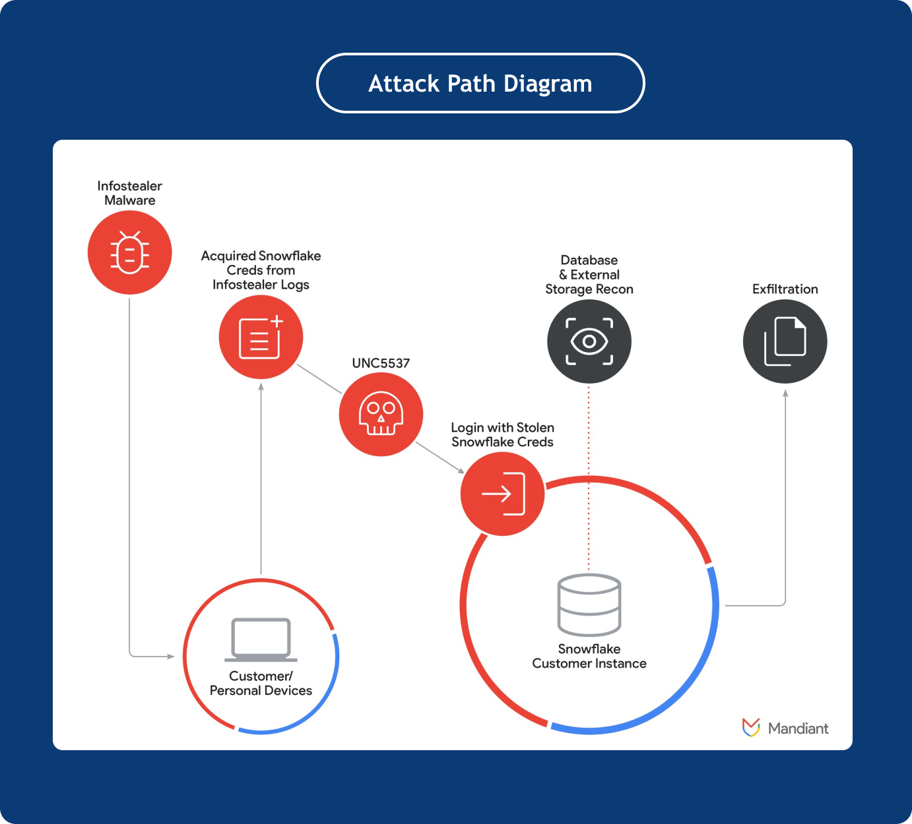

Snowflake Data Breach Campaign: How, Why, And What Conclusion Are We To Draw?
In mid-April 2024, a series of data breaches linked to Snowflake, a multi-cloud data warehousing platform, sent ripples of concern throughout the cybersecurity community.
Attackers got unauthorized access to a huge trove of sensitive data belonging to at least 165 high-profile companies using valid credentials to their Snowflake accounts because of no MFA and poor password hygiene.
Hi, I’m Mathew Novosadny, a Cyber Security Engineer at Identité® and today I’m going to analyze the details of a campaign against Snowflake customers — one of the largest data breaches of 2024.
How Did This Headline Breaking Data Breach Happen?
In late May 2024, UNC5537, which is described as a "financially motivated threat actor", put the stolen personal data belonging to Ticketmaster and Santander customers up for sale on the cybercrime forum, claiming they had breached Snowflake's system.
Snowflake and Mandiant, a cybersecurity firm acquired by Google, ran an analysis that found that individual customer accounts were breached using customer credentials previously stolen via infostealer malware.
Mandiant's investigation has revealed no proof indicating that unauthorized access to Snowflake customer instances resulted from a breach of Snowflake-owned systems.
Why Did That Happen?
By the nature of my work, I see things that confirm that every subsequent year the threat is only getting worse. Frankly, hackers are always one step ahead.
The sad truth is that generally, the software security industry is just reacting to threats that cyber-criminals expose. Once attackers begin exploiting a vulnerability in an application, cybersecurity organizations try to mitigate the threat by issuing security updates for existing software or by creating new programs.
Leave-no-trace malware, cross-site scripting, and supply chain attacks are just some of the many ways we know “bad guys” currently use to infiltrate networks and access internal systems. And, unfortunately, we can’t predict what new threats the cyber-criminals will unleash.

Source: TechTarget
So, I always say that one of the best practices to enhance data security is keeping a computer with sensitive information permanently offline.
This is, however, quite a radical approach, difficult to apply in the modern world.
In most occasions, the most convenient and reliable way execs choose to protect their systems against intruders is by employing strong access controls, including MFA and network-allow lists.
At the time of the compromise, the affected Snowflakes’ customer instances did not require MFA. Network allow lists were also not implemented to restrict access to trusted locations.
Additionally, Mandiant has assessed that many of the credentials that UNC5537 used to access Snowflake accounts haven't been updated in the past two to four years.
These credentials were primarily acquired through a series of malware attacks, targeting non-Snowflake systems. This enabled the attacker to infiltrate the affected customer accounts and subsequently export valuable customer data from the Snowflake customer instances.

Source: Google Cloud
In other words, so far, Snowflake states the breach wasn’t caused by any flaws, misconfiguration, or malicious activity within the Snowflake production environment, but poorly secured customer accounts.
More About Victims
Some of the major companies hit in the data breach have included:
Santander Bank
Spanish Financial Group Banco Santander S.A., which employs 200,000 people worldwide, reported unauthorized access to a database hosted by a third-party provider, which was later connected to the Snowflake breach.
In a hacking forum post, a notorious group of hackers named ShinyHunters advertised possessing confidential data including:
30 million people’s bank account details
28 million credit card numbers
6 million account numbers and balances
human resources information for Santander staff
The bank has not provided any comment on the veracity of those claims.
Ticketmaster
Entertainment conglomerate Live Nation, Ticketmaster’s parent company, confirmed the Ticketmaster breach after hackers offered to sell stolen info of 560 million on the dark web at $500,000.
The aforementioned ShinyHunters reportedly has a 1.3 terabyte database of information on approximately 560 million of the site’s customers such as names, addresses, emails and phone numbers. The breached information allegedly contains credit card details — names, the last four digits and expiration dates.
AT&T
AT&T claimed that attackers had “unlawfully accessed and copied AT&T call logs” stored on a third-party cloud platform.
The breach touched call and text records of “nearly all” its cellular customers, users of AT&T’s wireless network, as well as AT&T’s landline customers who interacted with these mobile numbers. The exposed data spanned from May 1, 2022, to October 31, 2022.
Although customer names, Social Security numbers, and dates of birth were not leaked, the telco giant acknowledged that they could potentially be inferred using publicly available tools.
Advance Auto Parts
Advance Auto Plus has disclosed a data breach affecting over 2.3 million people. The company said its Snowflake environment was breached for 40 days, reportedly exposing 380 million customer profiles, 140 million customer orders, and 44 million loyalty/gas card numbers.
Employment candidate information, including demographic details and Social Security numbers, is also among the stolen data.
Tips On How To Protect Your Systems Against Similar Data Breaches
For companies seeking to level up their security posture and reduce vulnerability to cyber threats, it’s pivotal to be proactive by sticking to the following preventive measures:
Invite professional services and ask them to perform a vulnerability assessment internally and on your public websites.
Enforce robust access controls by incorporating multi-factor authentication and network-allow lists for critical systems.
Integrate continuous risk monitoring within the organization's operational framework.
Rotate credentials periodically, if you’re not using passwordless authentication solutions.
Monitor data breaches at large corporations and web services providers, during which your data might be compromised.
Update and patch your systems continually to ensure that they are equipped to defend against the latest security threats.
Implement reliable endpoint detection and response (EDR) solutions to proactively hunt for vulnerabilities.
Secure data at rest and in transit with encryption.
Perform comprehensive security assessments of third-party vendors and cloud service providers.
Educate staff on best cybersecurity practices and encourage a culture of vigilance.
How Identité® Can Help
The Snowflake case might never have seen the light of day if affected customers had used passwordless authentication solutions to secure their accounts. The absence of passwords makes credential theft impossible.
The NoPass™ Employee Single-Sign-On solution we developed for enterprise clients simplifies application access by providing employees with a secure, passwordless and user-friendly login process.
To authenticate, users simply need to match two images—a picture and a 3-digit code—in their mobile app and on their desktop. If the images match, all they need to finish authentication is to click the "Approve" button.
In addition to our workforce solution, we offer PasswordFree® for customers. PasswordFree® application for BigCommerce, WordPress and Shopify allows you to protect your customers’ data, boost client retention, and increase conversions.
No password, no credential-based data breaches. Whether you are a fragile start-up striving to build quality custom relationships and get a solid reputation within your business community, or a mature, established enterprise taking care of proper customer data protection, we've got you covered.
Contact our vetted cybersecurity professionals today to discuss your business requirements in detail.